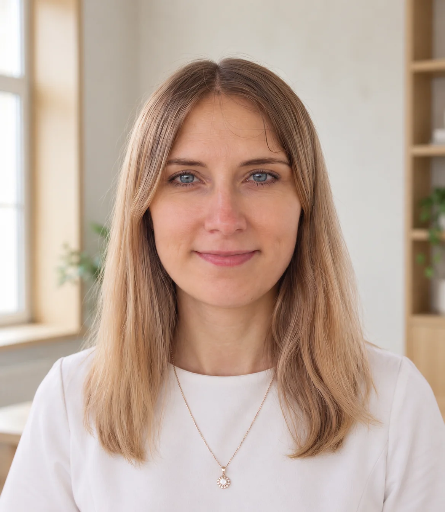

Обо мне

- 15+лет главным бухгалтером
- 3успешных Due Diligence
- 2 500актов/мес. без ручного ввода
- 4 200контрагентов в годовой сверке
На последнем месте работы около 6 лет была главным бухгалтером в IT-компании ООО «ФИТМОСТ», которая с 2025 года выросла до среднего бизнеса: прошли вместе восстановление учета, несколько Due Diligence, автоматизаций, применение налоговых льгот и не одну смену законодательства.
- Формат работы: веду учёт целиком, отдельный участок или руковожу командой (был заместитель и помощники, обучала новичков).
- Отрасли: ООО и ИП — IT и разработка ПО, услуги, торговля.
- Подход: навожу порядок, готовлю понятную аналитику для руководителя и ускоряю рутину с помощью ИИ. Довожу задачи до результата в срок.